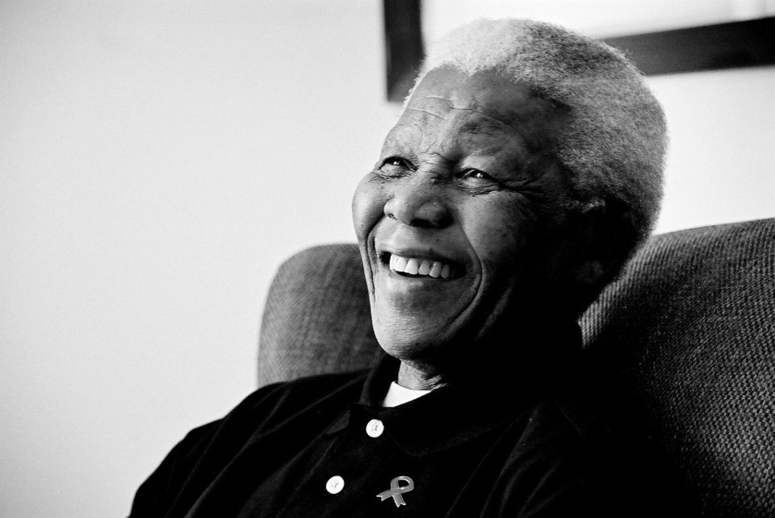

Nelson Mandela
Champion of Freedom
Here's a timeline of Nelson Mandela's life
- 1918 - Born in Mvezo, Umtata
- 1927 - Was adopted by Jongintaba Dalindyebo after his father died
- 1939 - Entered the elite University of Fort Hare, the only Western-style higher learning institute for South African blacks at the time
- 1944 - Joined the African National Congress (ANC) and worked with fellow party members, to establish its youth league, the ANCYL
- 1944 - Married his first wife, Evelyn Ntoko Mase
- 1952 - Helped lead the ANC’s Campaign for the Defiance of Unjust Laws, traveling across the country to organize protests against discriminatory policies
- 1952 - Opened South Africa’s first black law firm, which offered free or low-cost legal counsel to those affected by apartheid legislation
- 1956 - Was arrested and went on trial for treason
- 1957 - Divorced his first wife, Evelyn Ntoko Mase after having four children together
- 1958 - Married Winnie Madikizela-Mandela, his second wife
- 1961 - Was acquitted of all charges
- 1961 - Co-founded and became the first leader of Umkhonto we Sizwe (“Spear of the Nation”), also known as MK, a new armed wing of the ANC
- 1962 - Was charged with inciting workers' strikes and leaving the country without permission
- 1964 - Mandela and two of his co-accused were found guilty on all charges and sentenced to life imprisonment rather than death
- 1964 - Initially classified as the lowest grade of prisoner, Class D, he was permitted one visit and one letter every six months
- 1969 - An escape plan was developed but it was abandoned after being infiltrated by an agent of the South African Bureau of State Security (BOSS)
- 1970 - Met British Labour Party MP Dennis Healey
- 1975 - Mandela had become a Class A prisoner, allowing greater numbers of visits and letters
- 1978 - Celebrated his 60th birthday in prison
- 1982 - Transferred to Pollsmoor Prison in Tokai, Cape Town
- 1988 - Moved to Victor Verster Prison near Paarl
- 1990 - Released from prison
- 1992 - Announced his seperation from his wife after she was sentenced to prison
- 1994-1999 - Became South Africa's First Black President
- 2004 - Retired from public life because his health was declining
- 2013 - Died at the age of 95.
"I learned that courage was not the absence of fear, but the triumph over it. The brave man is not he who does not feel afraid, but he who conquers that fear."
-
If you have time, you should read more about this incredible human being on his Wikipedia entry